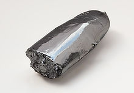

Ruthenium
|  | |||||||||||||||||||||||||||||||||||||||||||||||||||||||||||||||||||||||||||||||||||||||||||||||||||||||||||||||||||||||||||||||||||||||||||||||||||||||||||||||||||||||||||||||||||||||||||||||||||||||||||||||||||||||||||||||||||||
| General properties | |||||||||||||||||||||||||||||||||||||||||||||||||||||||||||||||||||||||||||||||||||||||||||||||||||||||||||||||||||||||||||||||||||||||||||||||||||||||||||||||||||||||||||||||||||||||||||||||||||||||||||||||||||||||||||||||||||||
|---|---|---|---|---|---|---|---|---|---|---|---|---|---|---|---|---|---|---|---|---|---|---|---|---|---|---|---|---|---|---|---|---|---|---|---|---|---|---|---|---|---|---|---|---|---|---|---|---|---|---|---|---|---|---|---|---|---|---|---|---|---|---|---|---|---|---|---|---|---|---|---|---|---|---|---|---|---|---|---|---|---|---|---|---|---|---|---|---|---|---|---|---|---|---|---|---|---|---|---|---|---|---|---|---|---|---|---|---|---|---|---|---|---|---|---|---|---|---|---|---|---|---|---|---|---|---|---|---|---|---|---|---|---|---|---|---|---|---|---|---|---|---|---|---|---|---|---|---|---|---|---|---|---|---|---|---|---|---|---|---|---|---|---|---|---|---|---|---|---|---|---|---|---|---|---|---|---|---|---|---|---|---|---|---|---|---|---|---|---|---|---|---|---|---|---|---|---|---|---|---|---|---|---|---|---|---|---|---|---|---|---|---|---|---|---|---|---|---|---|---|---|---|---|---|---|---|---|---|---|
| Name, symbol | ruthenium, Ru | ||||||||||||||||||||||||||||||||||||||||||||||||||||||||||||||||||||||||||||||||||||||||||||||||||||||||||||||||||||||||||||||||||||||||||||||||||||||||||||||||||||||||||||||||||||||||||||||||||||||||||||||||||||||||||||||||||||
| Pronunciation | /ruːˈθiːniəm/ roo-THEE-nee-əm |
||||||||||||||||||||||||||||||||||||||||||||||||||||||||||||||||||||||||||||||||||||||||||||||||||||||||||||||||||||||||||||||||||||||||||||||||||||||||||||||||||||||||||||||||||||||||||||||||||||||||||||||||||||||||||||||||||||
| Appearance | silvery white metallic | ||||||||||||||||||||||||||||||||||||||||||||||||||||||||||||||||||||||||||||||||||||||||||||||||||||||||||||||||||||||||||||||||||||||||||||||||||||||||||||||||||||||||||||||||||||||||||||||||||||||||||||||||||||||||||||||||||||
| Ruthenium in the periodic table | |||||||||||||||||||||||||||||||||||||||||||||||||||||||||||||||||||||||||||||||||||||||||||||||||||||||||||||||||||||||||||||||||||||||||||||||||||||||||||||||||||||||||||||||||||||||||||||||||||||||||||||||||||||||||||||||||||||
|
|||||||||||||||||||||||||||||||||||||||||||||||||||||||||||||||||||||||||||||||||||||||||||||||||||||||||||||||||||||||||||||||||||||||||||||||||||||||||||||||||||||||||||||||||||||||||||||||||||||||||||||||||||||||||||||||||||||
| Atomic number | 44 | ||||||||||||||||||||||||||||||||||||||||||||||||||||||||||||||||||||||||||||||||||||||||||||||||||||||||||||||||||||||||||||||||||||||||||||||||||||||||||||||||||||||||||||||||||||||||||||||||||||||||||||||||||||||||||||||||||||
| Standard atomic weight (±) | 101.07(2)[1] | ||||||||||||||||||||||||||||||||||||||||||||||||||||||||||||||||||||||||||||||||||||||||||||||||||||||||||||||||||||||||||||||||||||||||||||||||||||||||||||||||||||||||||||||||||||||||||||||||||||||||||||||||||||||||||||||||||||
| Element category | transition metal | ||||||||||||||||||||||||||||||||||||||||||||||||||||||||||||||||||||||||||||||||||||||||||||||||||||||||||||||||||||||||||||||||||||||||||||||||||||||||||||||||||||||||||||||||||||||||||||||||||||||||||||||||||||||||||||||||||||
| Group, block | group 8, d-block | ||||||||||||||||||||||||||||||||||||||||||||||||||||||||||||||||||||||||||||||||||||||||||||||||||||||||||||||||||||||||||||||||||||||||||||||||||||||||||||||||||||||||||||||||||||||||||||||||||||||||||||||||||||||||||||||||||||
| Period | period 5 | ||||||||||||||||||||||||||||||||||||||||||||||||||||||||||||||||||||||||||||||||||||||||||||||||||||||||||||||||||||||||||||||||||||||||||||||||||||||||||||||||||||||||||||||||||||||||||||||||||||||||||||||||||||||||||||||||||||
| Electron configuration | [Kr] 4d7 5s1 | ||||||||||||||||||||||||||||||||||||||||||||||||||||||||||||||||||||||||||||||||||||||||||||||||||||||||||||||||||||||||||||||||||||||||||||||||||||||||||||||||||||||||||||||||||||||||||||||||||||||||||||||||||||||||||||||||||||
| per shell | 2, 8, 18, 15, 1 | ||||||||||||||||||||||||||||||||||||||||||||||||||||||||||||||||||||||||||||||||||||||||||||||||||||||||||||||||||||||||||||||||||||||||||||||||||||||||||||||||||||||||||||||||||||||||||||||||||||||||||||||||||||||||||||||||||||
| Physical properties | |||||||||||||||||||||||||||||||||||||||||||||||||||||||||||||||||||||||||||||||||||||||||||||||||||||||||||||||||||||||||||||||||||||||||||||||||||||||||||||||||||||||||||||||||||||||||||||||||||||||||||||||||||||||||||||||||||||
| Melting point | 2607 K (2334 °C, 4233 °F) | ||||||||||||||||||||||||||||||||||||||||||||||||||||||||||||||||||||||||||||||||||||||||||||||||||||||||||||||||||||||||||||||||||||||||||||||||||||||||||||||||||||||||||||||||||||||||||||||||||||||||||||||||||||||||||||||||||||
| Boiling point | 4423 K (4150 °C, 7502 °F) | ||||||||||||||||||||||||||||||||||||||||||||||||||||||||||||||||||||||||||||||||||||||||||||||||||||||||||||||||||||||||||||||||||||||||||||||||||||||||||||||||||||||||||||||||||||||||||||||||||||||||||||||||||||||||||||||||||||
| Density near r.t. | 12.45 g·cm−3 | ||||||||||||||||||||||||||||||||||||||||||||||||||||||||||||||||||||||||||||||||||||||||||||||||||||||||||||||||||||||||||||||||||||||||||||||||||||||||||||||||||||||||||||||||||||||||||||||||||||||||||||||||||||||||||||||||||||
| when liquid, at m.p. | 10.65 g·cm−3 | ||||||||||||||||||||||||||||||||||||||||||||||||||||||||||||||||||||||||||||||||||||||||||||||||||||||||||||||||||||||||||||||||||||||||||||||||||||||||||||||||||||||||||||||||||||||||||||||||||||||||||||||||||||||||||||||||||||
| Heat of fusion | 38.59 kJ·mol−1 | ||||||||||||||||||||||||||||||||||||||||||||||||||||||||||||||||||||||||||||||||||||||||||||||||||||||||||||||||||||||||||||||||||||||||||||||||||||||||||||||||||||||||||||||||||||||||||||||||||||||||||||||||||||||||||||||||||||
| Heat of vaporization | 619 kJ·mol−1 | ||||||||||||||||||||||||||||||||||||||||||||||||||||||||||||||||||||||||||||||||||||||||||||||||||||||||||||||||||||||||||||||||||||||||||||||||||||||||||||||||||||||||||||||||||||||||||||||||||||||||||||||||||||||||||||||||||||
| Molar heat capacity | 24.06 J·mol−1·K−1 | ||||||||||||||||||||||||||||||||||||||||||||||||||||||||||||||||||||||||||||||||||||||||||||||||||||||||||||||||||||||||||||||||||||||||||||||||||||||||||||||||||||||||||||||||||||||||||||||||||||||||||||||||||||||||||||||||||||
vapor pressure
|
|||||||||||||||||||||||||||||||||||||||||||||||||||||||||||||||||||||||||||||||||||||||||||||||||||||||||||||||||||||||||||||||||||||||||||||||||||||||||||||||||||||||||||||||||||||||||||||||||||||||||||||||||||||||||||||||||||||
| Atomic properties | |||||||||||||||||||||||||||||||||||||||||||||||||||||||||||||||||||||||||||||||||||||||||||||||||||||||||||||||||||||||||||||||||||||||||||||||||||||||||||||||||||||||||||||||||||||||||||||||||||||||||||||||||||||||||||||||||||||
| Oxidation states | 8, 7, 6, 4, 3, 2, 1,[2] −2 (a mildly acidic oxide) | ||||||||||||||||||||||||||||||||||||||||||||||||||||||||||||||||||||||||||||||||||||||||||||||||||||||||||||||||||||||||||||||||||||||||||||||||||||||||||||||||||||||||||||||||||||||||||||||||||||||||||||||||||||||||||||||||||||
| Electronegativity | Pauling scale: 2.2 | ||||||||||||||||||||||||||||||||||||||||||||||||||||||||||||||||||||||||||||||||||||||||||||||||||||||||||||||||||||||||||||||||||||||||||||||||||||||||||||||||||||||||||||||||||||||||||||||||||||||||||||||||||||||||||||||||||||
| Ionization energies | 1st: 710.2 kJ·mol−1 2nd: 1620 kJ·mol−1 3rd: 2747 kJ·mol−1 |
||||||||||||||||||||||||||||||||||||||||||||||||||||||||||||||||||||||||||||||||||||||||||||||||||||||||||||||||||||||||||||||||||||||||||||||||||||||||||||||||||||||||||||||||||||||||||||||||||||||||||||||||||||||||||||||||||||
| Atomic radius | empirical: 134 pm | ||||||||||||||||||||||||||||||||||||||||||||||||||||||||||||||||||||||||||||||||||||||||||||||||||||||||||||||||||||||||||||||||||||||||||||||||||||||||||||||||||||||||||||||||||||||||||||||||||||||||||||||||||||||||||||||||||||
| Covalent radius | 146±7 pm | ||||||||||||||||||||||||||||||||||||||||||||||||||||||||||||||||||||||||||||||||||||||||||||||||||||||||||||||||||||||||||||||||||||||||||||||||||||||||||||||||||||||||||||||||||||||||||||||||||||||||||||||||||||||||||||||||||||
| Miscellanea | |||||||||||||||||||||||||||||||||||||||||||||||||||||||||||||||||||||||||||||||||||||||||||||||||||||||||||||||||||||||||||||||||||||||||||||||||||||||||||||||||||||||||||||||||||||||||||||||||||||||||||||||||||||||||||||||||||||
| Crystal structure | hexagonal close-packed (hcp)
|
||||||||||||||||||||||||||||||||||||||||||||||||||||||||||||||||||||||||||||||||||||||||||||||||||||||||||||||||||||||||||||||||||||||||||||||||||||||||||||||||||||||||||||||||||||||||||||||||||||||||||||||||||||||||||||||||||||
| Speed of sound thin rod | 5970 m·s−1 (at 20 °C) | ||||||||||||||||||||||||||||||||||||||||||||||||||||||||||||||||||||||||||||||||||||||||||||||||||||||||||||||||||||||||||||||||||||||||||||||||||||||||||||||||||||||||||||||||||||||||||||||||||||||||||||||||||||||||||||||||||||
| Thermal expansion | 6.4 µm·m−1·K−1 (at 25 °C) | ||||||||||||||||||||||||||||||||||||||||||||||||||||||||||||||||||||||||||||||||||||||||||||||||||||||||||||||||||||||||||||||||||||||||||||||||||||||||||||||||||||||||||||||||||||||||||||||||||||||||||||||||||||||||||||||||||||
| Thermal conductivity | 117 W·m−1·K−1 | ||||||||||||||||||||||||||||||||||||||||||||||||||||||||||||||||||||||||||||||||||||||||||||||||||||||||||||||||||||||||||||||||||||||||||||||||||||||||||||||||||||||||||||||||||||||||||||||||||||||||||||||||||||||||||||||||||||
| Electrical resistivity | 71 nΩ·m (at 0 °C) | ||||||||||||||||||||||||||||||||||||||||||||||||||||||||||||||||||||||||||||||||||||||||||||||||||||||||||||||||||||||||||||||||||||||||||||||||||||||||||||||||||||||||||||||||||||||||||||||||||||||||||||||||||||||||||||||||||||
| Magnetic ordering | paramagnetic[3] | ||||||||||||||||||||||||||||||||||||||||||||||||||||||||||||||||||||||||||||||||||||||||||||||||||||||||||||||||||||||||||||||||||||||||||||||||||||||||||||||||||||||||||||||||||||||||||||||||||||||||||||||||||||||||||||||||||||
| Young's modulus | 447 GPa | ||||||||||||||||||||||||||||||||||||||||||||||||||||||||||||||||||||||||||||||||||||||||||||||||||||||||||||||||||||||||||||||||||||||||||||||||||||||||||||||||||||||||||||||||||||||||||||||||||||||||||||||||||||||||||||||||||||
| Shear modulus | 173 GPa | ||||||||||||||||||||||||||||||||||||||||||||||||||||||||||||||||||||||||||||||||||||||||||||||||||||||||||||||||||||||||||||||||||||||||||||||||||||||||||||||||||||||||||||||||||||||||||||||||||||||||||||||||||||||||||||||||||||
| Bulk modulus | 220 GPa | ||||||||||||||||||||||||||||||||||||||||||||||||||||||||||||||||||||||||||||||||||||||||||||||||||||||||||||||||||||||||||||||||||||||||||||||||||||||||||||||||||||||||||||||||||||||||||||||||||||||||||||||||||||||||||||||||||||
| Poisson ratio | 0.30 | ||||||||||||||||||||||||||||||||||||||||||||||||||||||||||||||||||||||||||||||||||||||||||||||||||||||||||||||||||||||||||||||||||||||||||||||||||||||||||||||||||||||||||||||||||||||||||||||||||||||||||||||||||||||||||||||||||||
| Mohs hardness | 6.5 | ||||||||||||||||||||||||||||||||||||||||||||||||||||||||||||||||||||||||||||||||||||||||||||||||||||||||||||||||||||||||||||||||||||||||||||||||||||||||||||||||||||||||||||||||||||||||||||||||||||||||||||||||||||||||||||||||||||
| Brinell hardness | 2160 MPa | ||||||||||||||||||||||||||||||||||||||||||||||||||||||||||||||||||||||||||||||||||||||||||||||||||||||||||||||||||||||||||||||||||||||||||||||||||||||||||||||||||||||||||||||||||||||||||||||||||||||||||||||||||||||||||||||||||||
| CAS Registry Number | 7440-18-8 | ||||||||||||||||||||||||||||||||||||||||||||||||||||||||||||||||||||||||||||||||||||||||||||||||||||||||||||||||||||||||||||||||||||||||||||||||||||||||||||||||||||||||||||||||||||||||||||||||||||||||||||||||||||||||||||||||||||
| History | |||||||||||||||||||||||||||||||||||||||||||||||||||||||||||||||||||||||||||||||||||||||||||||||||||||||||||||||||||||||||||||||||||||||||||||||||||||||||||||||||||||||||||||||||||||||||||||||||||||||||||||||||||||||||||||||||||||
| Naming | after Ruthenia (Latin for: medieval Kyivska Rus' region) | ||||||||||||||||||||||||||||||||||||||||||||||||||||||||||||||||||||||||||||||||||||||||||||||||||||||||||||||||||||||||||||||||||||||||||||||||||||||||||||||||||||||||||||||||||||||||||||||||||||||||||||||||||||||||||||||||||||
| Discovery and first isolation | Karl Ernst Claus (1844) | ||||||||||||||||||||||||||||||||||||||||||||||||||||||||||||||||||||||||||||||||||||||||||||||||||||||||||||||||||||||||||||||||||||||||||||||||||||||||||||||||||||||||||||||||||||||||||||||||||||||||||||||||||||||||||||||||||||
| Most stable isotopes | |||||||||||||||||||||||||||||||||||||||||||||||||||||||||||||||||||||||||||||||||||||||||||||||||||||||||||||||||||||||||||||||||||||||||||||||||||||||||||||||||||||||||||||||||||||||||||||||||||||||||||||||||||||||||||||||||||||
|
|||||||||||||||||||||||||||||||||||||||||||||||||||||||||||||||||||||||||||||||||||||||||||||||||||||||||||||||||||||||||||||||||||||||||||||||||||||||||||||||||||||||||||||||||||||||||||||||||||||||||||||||||||||||||||||||||||||
| Decay modes in parentheses are predicted, but have not yet been observed | |||||||||||||||||||||||||||||||||||||||||||||||||||||||||||||||||||||||||||||||||||||||||||||||||||||||||||||||||||||||||||||||||||||||||||||||||||||||||||||||||||||||||||||||||||||||||||||||||||||||||||||||||||||||||||||||||||||
{kind=link}
Ruthenium is a chemical element with symbol Ru and atomic number 44. It is a rare transition metal belonging to the platinum group of the periodic table. Like the other metals of the platinum group, ruthenium is inert to most other chemicals. The Baltic German scientist Karl Ernst Claus discovered the element in 1844, and named it after Ruthenia, the Latin word for Rus'. Ruthenium usually occurs as a minor component of platinum ores; annual production is about 20 tonnes.[4] Most ruthenium produced is used for wear-resistant electrical contacts and the production of thick-film resistors. A minor application of ruthenium is its use in some platinum alloys, and, like many elements located near platinum, is used in automobile catalytic converters.
Contents
[hide]Characteristics[edit]
Physical properties[edit]
{kind=link}
A polyvalent hard white metal, ruthenium is a member of the platinum group and is in group 8 of the periodic table:
| Z | Element | No. of electrons/shell |
|---|---|---|
| 26 | iron | 2, 8, 14, 2 |
| 44 | ruthenium | 2, 8, 18, 15, 1 |
| 76 | osmium | 2, 8, 18, 32, 14, 2 |
| 108 | hassium | 2, 8, 18, 32, 32, 14, 2 (predicted) |
However, it has an atypical configuration in its outermost electron shells: whereas all other group 8 elements have 2 electrons in the outermost shell, in ruthenium, one of those is transferred to a lower shell. This effect can be observed in the neighboring metals niobium (41), rhodium (45), and palladium (46).
Ruthenium has four crystal modifications and does not tarnish unless subject to high temperatures. Ruthenium dissolves in fused alkalis, is not attacked by acids but is attacked by halogens at high temperatures. Small amounts of ruthenium can increase the hardness of platinum and palladium. The corrosion resistance of titanium is increased markedly by the addition of a small amount of ruthenium.[5] The metal can be plated either by electroplating or by thermal decomposition methods. A ruthenium-molybdenum alloy is known to be superconductive at temperatures below 10.6 K.[5]
Isotopes[edit]
Naturally occurring ruthenium is composed of seven stable isotopes. Additionally, 34 radioactive isotopes have been discovered. Of these radioisotopes, the most stable are 106Ru with a half-life of 373.59 days, 103Ru with a half-life of 39.26 days and 97Ru with a half-life of 2.9 days.[6][7]
Fifteen other radioisotopes have been characterized with atomic weights ranging from 89.93 u (90Ru) to 114.928 u (115Ru). Most of these have half-lives that are less than five minutes except 95Ru (half-life: 1.643 hours) and 105Ru (half-life: 4.44 hours).[6][7]
The primary decay mode before the most abundant isotope, 102Ru, is electron capture and the primary mode after is beta emission. The primary decay product before 102Ru is technetium and the primary decay product after is rhodium.[6][7]
Occurrence[edit]
Ruthenium is exceedingly rare, only the 74th most abundant metal in Earth's crust.[8] This element is generally found in ores with the other platinum group metals in the Ural Mountains and in North and South America. Small but commercially important quantities are also found in pentlandite extracted from Sudbury, Ontario, Canada, and in pyroxenite deposits in South Africa. The native form of ruthenium is a very rare mineral (Ir replaces part of Ru in its structure).[9][10]
Production[edit]
Mining[edit]
Roughly 12 tonnes of ruthenium is mined each year with world reserves estimated as 5,000 tonnes.[8] The composition of the mined platinum group metal (PGM) mixtures varies in a wide range depending on the geochemical formation. For example, the PGMs mined in South Africa contain on average 11% ruthenium while the PGMs mined in the former USSR contain only 2% based on research dating from 1992.[11][12]
Ruthenium, like the other platinum group metals, is obtained commercially as a by-product from nickel and copper mining and processing as well as by the processing of platinum group metal ores. During electrorefining of copper and nickel, noble metals such as silver, gold and the platinum group metals settle to the bottom of the cell as anode mud, which forms the starting point for their extraction.[9][10]
To separate the metals, they must first be brought into solution.
Several methods are available depending on the separation process and
the composition of the mixture; two representative methods are fusion
with sodium peroxide followed by dissolution in aqua regia, and dissolution in a mixture of chlorine with hydrochloric acid.[13][14]
Osmium, ruthenium, rhodium and iridium can be separated from platinum
and gold and base metals by their insolubility in aqua regia, leaving a
solid residue. Rhodium can be separated from the residue by treatment
with molten sodium bisulfate. The insoluble residue, containing Ru, Os
and Ir is treated with sodium oxide, in which Ir is insoluble, producing
water-soluble Ru and Os salts. After oxidation to the volatile oxides, RuO
4 is separated from OsO
4 by precipitation of (NH4)3RuCl6 with ammonium chloride or by distillation or extraction with organic solvents of the volatile osmium tetroxide.[15] Hydrogen is used to reduce ammonium ruthenium chloride yielding a powder.[16] The first method to precipitate the ruthenium with ammonium chloride is similar to the procedure that Smithson Tennant and William Hyde Wollaston
used for their separation. Several methods are suitable for industrial
scale production. In either case, the product is reduced using hydrogen,
yielding the metal as a powder or sponge that can be treated using powder metallurgy techniques or by argon-arc welding.[17]
From used nuclear fuels[edit]
Fission products of uranium-235 contain significant amounts of ruthenium and the lighter platinum group metals and therefore used nuclear fuel might be a possible source of ruthenium. The complicated extraction is expensive and the radioactive isotopes of ruthenium that are present would make storage for several half-lives of the decaying isotopes necessary. This makes this source of ruthenium unattractive and no large-scale extraction has been started.[18][19][20]
Chemical compounds[edit]
The oxidation states of ruthenium range from 0 to +8, and −2. The properties of ruthenium and osmium compounds are often similar. The +2, +3, and +4 states are the most common. The most prevalent precursor is ruthenium trichloride, a red solid that is poorly defined chemically but versatile synthetically.[16]
Oxides[edit]
Ruthenium can be oxidized to ruthenium(IV) oxide (RuO2, oxidation state +4) which can in turn be oxidized by sodium metaperiodate to ruthenium tetroxide, RuO4, a strong oxidizing agent with structure and properties analogous to osmium tetroxide. Like osmium tetroxide, ruthenium tetroxide is a potent fixative and stain for electron microscopy of organic materials, and is mostly used to reveal the structure of polymer samples.[21] Dipotassium ruthenate (K2RuO4, +6), and potassium perruthenate (KRuO4, +7) are also known.[22]
Coordination and organometallic complexes[edit]
{kind=link}
Ruthenium forms a variety of coordination complexes. Examples are the many pentammine derivatives [Ru(NH3)5L]n+ which often exist in both Ru(II) and Ru(III). Derivatives of bipyridine and terpyridine are numerous, best known being the luminescent tris(bipyridine)ruthenium(II) chloride.
Ruthenium forms a wide range compounds with carbon-ruthenium bonds. Ruthenocene is analogous to ferrocene structurally, but exhibits distinctive redox properties. A large number of complexes of carbon monoxide are known, the parent being triruthenium dodecacarbonyl. The analogue of iron pentacarbonyl, ruthenium pentacarbonyl is unstable at ambient conditions. Ruthenium trichloride carbonylates (reacts with carbon monoxide) to give mono- and diruthenium(II) carbonyls from which many derivatives have been prepared such as RuHCl(CO)(PPh3)3 and Ru(CO)2(PPh3)3 (Roper's complex). Heating solutions of ruthenium trichloride in alcohols with triphenylphosphine gives tris(triphenylphosphine)ruthenium dichloride (RuCl2(PPh3)3), which converts to the hydride complex chlorohydridotris(triphenylphosphine)ruthenium(II) (RuHCl(PPh3)3).[16]
In the area of fine chemical synthesis, Grubbs' catalyst is used for alkene metathesis.[23]
Ruthenides[edit]
Metal ruthenides (Ru2−) are very rare, but are commonly found in superconductor applications, especially with regard to lanthanide metals such as cerium ruthenide (CeRu2).[24]
History[edit]
Though naturally occurring platinum alloys containing all six platinum group metals were used for a long time by pre-Columbian Americans and known as a material to European chemists from the mid-16th century, it took until the mid-18th century for platinum to be identified as a pure element. The discovery that natural platinum contained palladium, rhodium, osmium and iridium occurred in the first decade of the 19th century.[25] Platinum in alluvial sands of Russian rivers gave access to raw material for use in plates and medals and for the minting of ruble coins, starting in 1828.[26] Residues of platinum production for minting were available in the Russian Empire, and therefore most of the research on them was done in Eastern Europe.
It is possible that the Polish chemist Jędrzej Śniadecki isolated element 44 (which he called "vestium") from platinum ores in 1807. He published an announcement of his discovery in the Polish language in article "Rosprawa o nowym metallu w surowey platynie odkrytym" (Dissertation about the new metal discovered in raw platinum) in 1808. His work was never confirmed, however, and he later withdrew his claim of discovery.[8] Jöns Berzelius and Gottfried Osann nearly discovered ruthenium in 1827.[27] They examined residues that were left after dissolving crude platinum from the Ural Mountains in aqua regia. Berzelius did not find any unusual metals, but Osann thought he found three new metals, pluranium, ruthenium and polinium. This discrepancy led to a long-standing controversy between Berzelius and Osann about the composition of the residues.[28]
In 1844, the Baltic German scientist Karl Ernst Claus showed that the compounds prepared by Gottfried Osann contained small amounts of ruthenium, which Claus had discovered the same year.[25] Claus isolated ruthenium from the platinum residues of the rouble production while he was working in Kazan University, Kazan.[28] Claus showed that ruthenium oxide contained a new metal and obtained 6 grams of ruthenium from the part of crude platinum that is insoluble in aqua regia.[28]
The name itself derives from Ruthenia, the Latin word for Rus', a historical area which includes present-day western Russia, Ukraine, Belarus, and parts of Slovakia and Poland. Claus used the name proposed by Gottfried Osann in 1828, who had chosen the element's name in honor of his birthland, as he was born in Tartu, Estonia, which was at the time a part of the Russian Empire.[25][29]
Applications[edit]
Because of its ability to harden platinum and palladium, ruthenium is used in platinum and palladium alloys to make wear-resistant electrical contacts. In this application, only thin-plated films are used to achieve the necessary wear-resistance. Because of its lower cost and similar properties compared to rhodium,[17] the use as plating material for electric contacts is one of the major applications.[9][30] The thin coatings are either applied by electroplating[31] or sputtering.[32]
Ruthenium dioxide and lead and bismuth ruthenates are used in thick-film chip resistors.[33][34][35] These two electronic applications account for 50% of the ruthenium consumption.[8]
Only a few ruthenium alloys are used other than those with other platinum group metals. Ruthenium is often used in small quantities in those alloys to improve some of their properties. The beneficial effect on the corrosion resistance of titanium alloys led to the development of a special alloy containing 0.1% ruthenium.[36] Ruthenium is also used in some advanced high-temperature single-crystal superalloys, with applications including the turbine blades in jet engines. Several nickel based superalloy compositions are described in the literature. Among them are EPM-102 (with 3% Ru) and TMS-162 (with 6% Ru), as well as TMS-138[37] and TMS-174.[38][39] both containing 6% rhenium.[40] Fountain pen nibs are frequently tipped with alloys containing ruthenium. From 1944 onward, the famous Parker 51 fountain pen was fitted with the "RU" nib, a 14K gold nib tipped with 96.2% ruthenium and 3.8% iridium.[41]
Ruthenium is a component of mixed-metal oxide (MMO) anodes used for cathodic protection of underground and submerged structures, and for electrolytic cells for chemical processes such as generating chlorine from salt water.[42] The fluorescence of some ruthenium complexes is quenched by oxygen, which has led to their use as optode sensors for oxygen.[43] Ruthenium red, [(NH3)5Ru-O-Ru(NH3)4-O-Ru(NH3)5]6+, is a biological stain used to stain polyanionic molecules such as pectin and nucleic acids for light microscopy and electron microscopy.[44] The beta-decaying isotope 106 of ruthenium is used in radiotherapy of eye tumors, mainly malignant melanomas of the uvea.[45] Ruthenium-centered complexes are being researched for possible anticancer properties.[46] Compared with platinum complexes, those of ruthenium show greater resistance to hydrolysis and more selective action on tumors.[citation needed] NAMI-A and KP1019 are two drugs undergoing clinical evaluation against metastatic tumors and colon cancers.
Ruthenium tetroxide is used to expose latent fingerprints by turning to the brown/black ruthenium dioxide when in contact with fatty oils or fats contained in sebaceous contaminants of the print.[47]
Catalysis[edit]
Ruthenium is a versatile catalyst. Hydrogen sulfide can be split by light by using an aqueous suspension of CdS particles loaded with ruthenium dioxide. This may be useful in the removal of H2S in oil refineries and other industrial processing facilities.[48] Organometallic ruthenium carbene and alkylidene complexes have been found to be highly efficient catalysts for olefin metathesis, a process with important applications in organic and pharmaceutical chemistry.[49] Ruthenium-promoted cobalt catalysts are used in Fischer-Tropsch synthesis.
Solar energy conversion[edit]
Some ruthenium complexes absorb light throughout the visible spectrum and are being actively researched in various, potential, solar energy technologies. For example, Ruthenium-based compounds have been used for light absorption in dye-sensitized solar cells, a promising new low-cost solar cell system.[50]
Data storage[edit]
Chemical vapor deposition of ruthenium is used as a method to produce thin films of pure ruthenium on substrates. These films show promising properties for the use in microchips and for the giant magnetoresistive read element for hard disk drives.[51] Ruthenium was also suggested as a possible material for microelectronics because its use is compatible with semiconductor processing techniques.[52]
Exotic materials[edit]
Many ruthenium-based oxides show very unusual properties, such as a quantum critical point behavior,[53] exotic superconductivity,[54] and high-temperature ferromagnetism.[55]
Cultural references[edit]
Ruthenium plays an important role in the novel Arctic Drift by Clive Cussler. Ruthenium is found to be a catalyst in a very important new industrial process, but very little of the metal is known to remain on Earth, and the search for a new deposit in Canada is a vital part of the plot.
References[edit]
- Jump up ^ Standard Atomic Weights 2013. Commission on Isotopic Abundances and Atomic Weights
- Jump up ^ "Ruthenium: ruthenium(I) fluoride compound data". OpenMOPAC.net. Retrieved 2007-12-10.
- Jump up ^ Magnetic susceptibility of the elements and inorganic compounds, in Handbook of Chemistry and Physics 81st edition, CRC press.
- Jump up ^ Summary. Ruthenium. platinum.matthey.com, p. 9 (2009)
- ^ Jump up to: a b Hamond, C.R. "The elements", in Lide, D. R., ed. (2005). CRC Handbook of Chemistry and Physics (86th ed.). Boca Raton (FL): CRC Press. ISBN 0-8493-0486-5.
- ^ Jump up to: a b c Lide, D. R., ed. (2005). CRC Handbook of Chemistry and Physics (86th ed.). Boca Raton (FL): CRC Press. ISBN 0-8493-0486-5. Section 11, Table of the Isotopes
- ^ Jump up to: a b c Audi, G.; Bersillon, O.; Blachot, J.; Wapstra, A.H. (2003). "The Nubase evaluation of nuclear and decay properties". Nuclear Physics A 729: 3. Bibcode:2003NuPhA.729....3A. doi:10.1016/j.nuclphysa.2003.11.001.
- ^ Jump up to: a b c d Emsley, J. (2003). "Ruthenium". Nature's Building Blocks: An A-Z Guide to the Elements. Oxford, England, UK: Oxford University Press. pp. 368–370. ISBN 0-19-850340-7.
- ^ Jump up to: a b c George, Micheal W. "2006 Minerals Yearbook: Platinum-Group Metals" (PDF). United States Geological Survey USGS. Retrieved 2008-09-16.
- ^ Jump up to: a b "Commodity Report: Platinum-Group Metals" (PDF). United States Geological Survey USGS. Retrieved 2008-09-16.
- Jump up ^ Hartman, H. L.; Britton, S. G., eds. (1992). SME mining engineering handbook. Littleton, Colo.: Society for Mining, Metallurgy, and Exploration. p. 69. ISBN 978-0-87335-100-3.
- Jump up ^ Harris, Donald C.; Cabri, L. J. (1973). "The nomenclature of the natural alloys of osmium, iridium and ruthenium based on new compositional data of alloys from world-wide occurrences". The Canadian Mineralogist 12 (2): 104–112.
- Jump up ^ Renner, H.; Schlamp, G.; Kleinwächter, I.; Drost, E.; Lüschow, H. M.; Tews, P.; Panster, P.; Diehl, M.; Lang, J.; Kreuzer, T.; Knödler, A.; Starz, K. A.; Dermann, K.; Rothaut, J.; Drieselman, R. (2002). "Platinum group metals and compounds". Ullmann's Encyclopedia of Industrial Chemistry. Wiley. doi:10.1002/14356007.a21_075.
- Jump up ^ Seymour, R. J.; O'Farrelly, J. I. (2001). "Platinum-group metals". Kirk Othmer Encyclopedia of Chemical Technology. Wiley. doi:10.1002/0471238961.1612012019052513.a01.pub2.
- Jump up ^ Gilchrist, Raleigh (1943). "The Platinum Metals". Chemical Reviews 32 (3): 277–372. doi:10.1021/cr60103a002.
- ^ Jump up to: a b c Cotton, Simon (1997). Chemistry of Precious Metals. Springer-Verlag New York, LLC. pp. 1–20. ISBN 0-7514-0413-6.
- ^ Jump up to: a b Hunt, L. B.; Lever, F. M. (1969). "Platinum Metals: A Survey of Productive Resources to industrial Uses" (PDF). Platinum Metals Review 13 (4): 126–138.
- Jump up ^ Kolarik, Zdenek; Renard, Edouard V. (2005). "Potential Applications of Fission Platinoids in Industry" (PDF). Platinum Metals Review 49 (2): 79. doi:10.1595/147106705X35263.
- Jump up ^ Kolarik, Zdenek; Renard, Edouard V. (2003). "Recovery of Value Fission Platinoids from Spent Nuclear Fuel. Part I PART I: General Considerations and Basic Chemistry" (PDF). Platinum Metals Review 47 (2): 74–87.
- Jump up ^ Kolarik, Zdenek; Renard, Edouard V. (2003). "Recovery of Value Fission Platinoids from Spent Nuclear Fuel. Part II: Separation Process" (PDF). Platinum Metals Review 47 (2): 123–131.
- Jump up ^ G.M. Brown & J.H. Butler (1997) New method for the characterization of domain morphology of polymer blends using ruthenium tetroxide staining and low voltage scanning electron microscopy (LVSEM). Polymer 38, (15), 3937–3945.
- Jump up ^ Greenwood, N. N.; & Earnshaw, A. (1997). Chemistry of the Elements (2nd Edn.), Oxford:Butterworth-Heinemann. ISBN 0-7506-3365-4.
- Jump up ^ Hartwig, J. F. Organotransition Metal Chemistry, from Bonding to Catalysis, University Science Books: New York, 2010. ISBN 1-891389-53-X
- Jump up ^ Dilley, Neil Ross (1999). "Strongly correlated electrons in cerium- and ytterbium- intermetallic compounds: The superconducting mixed state of cerium ruthenide and intermediate valence in ytterbium iron antimony". PhD Thesis, Harvard University. p. 26. Bibcode:1999PhDT........26D.
- ^ Jump up to: a b c Weeks, Mary Elvira (1932). "The discovery of the elements. VIII. The platinum metals". Journal of Chemical Education 9 (6): 1017. Bibcode:1932JChEd...9.1017W. doi:10.1021/ed009p1017.
- Jump up ^ Raub, Christoph J. (2004). "The Minting of Platinum Roubles. Part I: History and Current Investigations" 48 (2). pp. 66–69. Archive
- Jump up ^ "New Metals in the Uralian Platina". The Philosophical Magazine 2: 391–392. 1827. doi:10.1080/14786442708674516.
- ^ Jump up to: a b c Pitchkov, V. N. (1996). "The Discovery of Ruthenium". Platinum Metals Review 40 (4): 181–188.
- Jump up ^ Partington, James Riddick (1964). History of Chemistry 4. London: Macmillan & Co. p. 499. ISBN 0-486-65977-1.
- Jump up ^ Rao, C; Trivedi, D (2005). "Chemical and electrochemical depositions of platinum group metals and their applications". Coordination Chemistry Reviews 249 (5–6): 613. doi:10.1016/j.ccr.2004.08.015.
- Jump up ^ Weisberg, A (1999). "Ruthenium plating". Metal Finishing 97: 297. doi:10.1016/S0026-0576(00)83089-5.
- Jump up ^ Prepared under the direction of the ASM International Handbook Committee; Merrill L. Minges, technical chairman (1989). Electronic materials handbook. Materials Park, OH: ASM International. p. 184. ISBN 978-0-87170-285-2.
- Jump up ^ Busana, M. G.; Prudenziati, M.; Hormadaly, J. (2006). "Microstructure development and electrical properties of RuO2-based lead-free thick film resistors". Journal of Materials Science: Materials in Electronics 17 (11): 951. doi:10.1007/s10854-006-0036-x.
- Jump up ^ Rane, Sunit; Prudenziati, Maria; Morten, Bruno (2007). "Environment friendly perovskite ruthenate based thick film resistors". Materials Letters 61 (2): 595. doi:10.1016/j.matlet.2006.05.015.
- Jump up ^ Slade, Paul G., ed. (1999). Electrical contacts : principles and applications. New York, NY: Dekker. pp. 184, 345. ISBN 978-0-8247-1934-0.
- Jump up ^ Schutz, R. W. (1996). "Ruthenium Enhanced Titanium Alloys" (PDF). Platinum Metals Review 40 (2): 54–61.
- Jump up ^ "Fourth generation nickel base single crystal superalloy. TMS-138 / 138A" (PDF). High Temperature Materials Center, National Institute for Materials Science, Japan. July 2006.
- Jump up ^ Koizumi, Yutaka et al. "Development of a Next-Generation Ni-base Single Crystal Superalloy" (PDF). Proceedings of the International Gas Turbine Congress, Tokyo 2–7 November 2003.
- Jump up ^ Walston, S.; Cetel, A.; MacKay, R.; O'Hara, K.; Duhl, D.; Dreshfield, R. (December 2004). "Joint Development of a Fourth Generation Single Crystal Superalloy" (PDF). NASA.
- Jump up ^ Bondarenko, Yu. A.; Kablov, E. N.; Surova, V. A.; Echin, A. B. (2006). "Effect of high-gradient directed crystallization on the structure and properties of rhenium-bearing single-crystal alloy". Metal Science and Heat Treatment 48 (7–8): 360. doi:10.1007/s11041-006-0099-6.
- Jump up ^ Mottishaw, J. (1999). "Notes from the Nib Works—Where's the Iridium?". The PENnant XIII (2).
- Jump up ^ Cardarelli, François (2008). "Dimensionally Stable Anodes (DSA) for Chlorine Evolution". Materials Handbook: A Concise Desktop Reference. London: Springer. pp. 581–582. ISBN 978-1-84628-668-1.
- Jump up ^ Varney, Mark S. (2000). "Oxygen Microoptode". Chemical sensors in oceanography. Amsterdam: Gordon & Breach. p. 150. ISBN 978-90-5699-255-2.
- Jump up ^ Hayat, M. A. (1993). "Ruthenium red". Stains and cytochemical methods. New York, NY: Plenum Press. pp. 305–310. ISBN 978-0-306-44294-0.
- Jump up ^ Wiegel, T. (1997). Radiotherapy of ocular disease, Ausgabe 13020. Basel ;Freiburg: Karger. ISBN 978-3-8055-6392-5.
- Jump up ^ Richards, AD; Rodger, A (2007). "Synthetic metallomolecules as agents for the control of DNA structure". Chem. Soc. Rev. 36 (3): 471–483. doi:10.1039/b609495c. PMID 17325786.
- Jump up ^ https://www.ncjrs.gov/App/publications/abstract.aspx?ID=172645
- Jump up ^ Atak, Suna; C̦elik, Mehmet Sabri (1998). Innovations in Mineral and Coal Processing. Taylor & Francis. p. 498. ISBN 978-90-5809-013-3.
- Jump up ^ Fürstner, Alois (2000). "Olefin Metathesis and Beyond". Angewandte Chemie International Edition 39 (17): 3012–3043. doi:10.1002/1521-3773(20000901)39:17<3012::AID-ANIE3012>3.0.CO;2-G. PMID 11028025.
- Jump up ^ Kuang, Daibin; Ito, Seigo; Wenger, Bernard; Klein, Cedric; Moser, Jacques-E; Humphry-Baker, Robin; Zakeeruddin, Shaik M.; Grätzel, Michael (2006). "High Molar Extinction Coefficient Heteroleptic Ruthenium Complexes for Thin Film Dye-Sensitized Solar Cells". Journal of the American Chemical Society 128 (12): 4146–54. doi:10.1021/ja058540p. PMID 16551124.
- Jump up ^ Kar, Samares (September 2007). Physics and Technology of High-k Gate Dielectrics 5, Ausgabe 4. The Electrochemical Society. p. 569. ISBN 9781566775700. ISSN 1938-6737.
- Jump up ^ Cheng,
A. H.-B.; Daniels, M.; Luttmer, J. D. (1998). "Environmental issues in
the electronics/semiconductor industries and:
Electrochemical/photochemical methods for pollution". The
Electrochemical Society. pp. 10–14. ISBN 978-1-56677-199-3.
|chapter=ignored (help) - Jump up ^ Perry, R.; Kitagawa, K.; Grigera, S.; Borzi, R.; MacKenzie, A.; Ishida, K.; Maeno, Y. (2004). "Multiple First-Order Metamagnetic Transitions and Quantum Oscillations in Ultrapure Sr.3Ru2O7". Physical Review Letters 92 (16). arXiv:cond-mat/0401371. Bibcode:2004PhRvL..92p6602P. doi:10.1103/PhysRevLett.92.166602.
- Jump up ^ Maeno, Yoshiteru; Rice, T. Maurice; Sigrist, Manfred (2001). "The Intriguing Superconductivity of Strontium Ruthenate" (PDF). Physics Today 54: 42. Bibcode:2001PhT....54a..42M. doi:10.1063/1.1349611.
- Jump up ^ Shlyk, Larysa; Kryukov, Sergiy; Schüpp-Niewa, Barbara; Niewa, Rainer; De Long, Lance E. (2008). "High-Temperature Ferromagnetism and Tunable Semiconductivity of (Ba, Sr)M2±xRu4∓xO11 (M = Fe, Co): A New Paradigm for Spintronics". Advanced Materials 20 (7): 1315. doi:10.1002/adma.200701951.
External links[edit]
| Wikimedia Commons has media related to Ruthenium. |
| Look up ruthenium in Wiktionary, the free dictionary. |
- Ruthenium at The Periodic Table of Videos (University of Nottingham)
- Nano-layer of ruthenium stabilizes magnetic sensors
| [hide] Periodic table (Large cells) | |||||||||||||||||||||||||||||||||
|---|---|---|---|---|---|---|---|---|---|---|---|---|---|---|---|---|---|---|---|---|---|---|---|---|---|---|---|---|---|---|---|---|---|
| 1 | 2 | 3 | 4 | 5 | 6 | 7 | 8 | 9 | 10 | 11 | 12 | 13 | 14 | 15 | 16 | 17 | 18 | ||||||||||||||||
| 1 | H | He | |||||||||||||||||||||||||||||||
| 2 | Li | Be | B | C | N | O | F | Ne | |||||||||||||||||||||||||
| 3 | Na | Mg | Al | Si | P | S | Cl | Ar | |||||||||||||||||||||||||
| 4 | K | Ca | Sc | Ti | V | Cr | Mn | Fe | Co | Ni | Cu | Zn | Ga | Ge | As | Se | Br | Kr | |||||||||||||||
| 5 | Rb | Sr | Y | Zr | Nb | Mo | Tc | Ru | Rh | Pd | Ag | Cd | In | Sn | Sb | Te | I | Xe | |||||||||||||||
| 6 | Cs | Ba | La | Ce | Pr | Nd | Pm | Sm | Eu | Gd | Tb | Dy | Ho | Er | Tm | Yb | Lu | Hf | Ta | W | Re | Os | Ir | Pt | Au | Hg | Tl | Pb | Bi | Po | At | Rn | |
| 7 | Fr | Ra | Ac | Th | Pa | U | Np | Pu | Am | Cm | Bk | Cf | Es | Fm | Md | No | Lr | Rf | Db | Sg | Bh | Hs | Mt | Ds | Rg | Cn | 113 | Fl | 115 | Lv | 117 | 118 | |
|
|
|||||||||||||||||||||||||||||||||
|
||
|
||